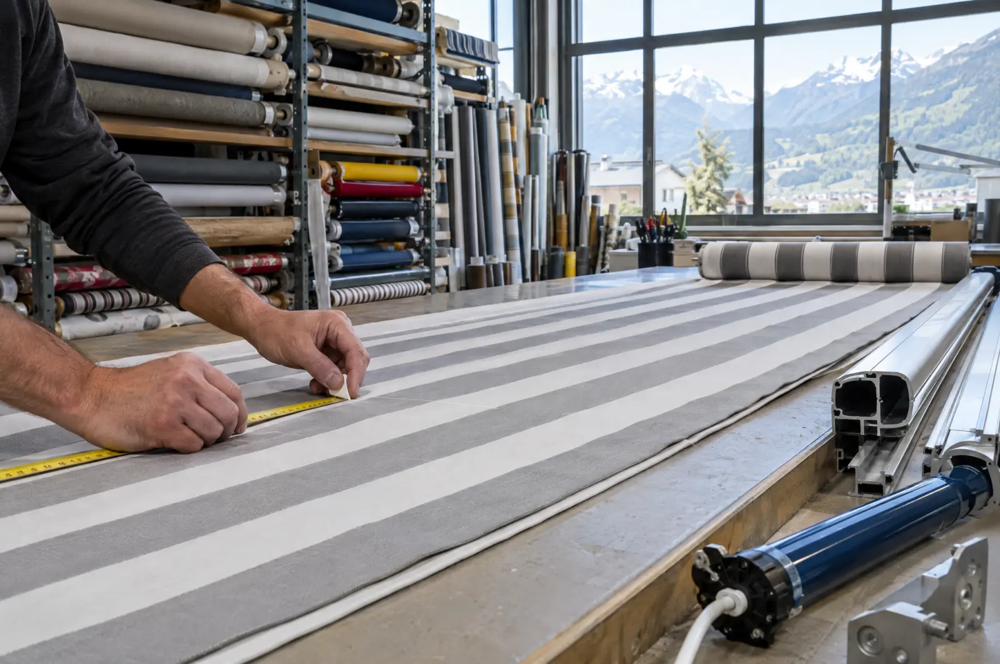

Accueil / Réparation
Store bloqué ou toile déchirée ?
Appelez-nous. On sécurise sous 48 heures ouvrées, et nos véhicules sont équipés pour réparer la plupart des stores sur place, toutes marques.

Les pannes que l’on règle le plus souvent.
Le foehn a arraché la toile
On sécurise le store pour qu’il ne cède pas au prochain coup de vent, puis on recoud ou on remplace la toile à l’atelier.
Le store ne remonte plus
Contrôle du moteur, des fins de course et de l’alimentation. Dans la plupart des cas, réparé le jour même avec les pièces du véhicule.
Les lames sont bloquées ou tordues
Remise en place des lames et des cordons, remplacement des lames abîmées par la grêle ou la neige.
Le volet roulant est coincé
Sangle, treuil ou moteur : on débloque, on répare, ou on motorise si vous en avez assez de tirer.
La télécommande ne répond plus
Reprogrammation ou remplacement pour les moteurs Somfy, Simu et Elero, et remise en service des scénarios domotiques.
Le store est trop vieux pour les pièces
On vous le dit franchement, et on vous propose une solution neuve ou une occasion révisée de notre atelier.
Des tarifs annoncés avant de venir.
Le diagnostic est offert si vous faites réparer. Au-delà d’une heure de travail ou de pièces à commander, on vous envoie un devis avant d’aller plus loin.
| Déplacement Sion, Sierre, Conthey, Savièse | CHF 80.– |
|---|---|
| Déplacement Martigny, Monthey, Chablais | CHF 110.– |
| Déplacement en station (Nendaz, Verbier, Crans-Montana) | CHF 130.– |
| Heure de travail, par technicien | CHF 105.– |
| Sécurisation d’un store bloqué | CHF 160.– |
| Réentoilage d’un store banne de 4 m | dès CHF 690.– |

Une toile neuve, le même store.
Un mécanisme bien entretenu dure trente ans, une toile une dizaine. Nous reprenons votre toile à l’atelier de Sion et reposons la neuve en une demi-journée.
- Jaune soleil
- Rayé gris perle
- Écru
- Anthracite
- Bleu glacier
Plus de 300 toiles Sattler et Dickson à voir sur nuancier, chez vous ou à l’atelier.
Une visite par an, avant l’été.
En avril ou en mai, un technicien passe sur tous vos stores : nettoyage, graissage, réglage des fins de course, contrôle des toiles, des capteurs de vent et de la domotique.
Communes, écoles et bâtiments publics : contrats sur mesure, interventions planifiées pendant les vacances scolaires.
Contrat d’entretien, maison jusqu’à 10 stores
190.– par an
- Déplacement compris, en plaine comme en station
- Petites pièces d’usure comprises
- Priorité en cas de panne pendant la saison
- Résiliable chaque année